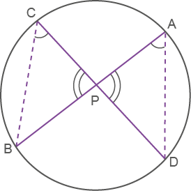
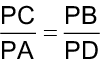
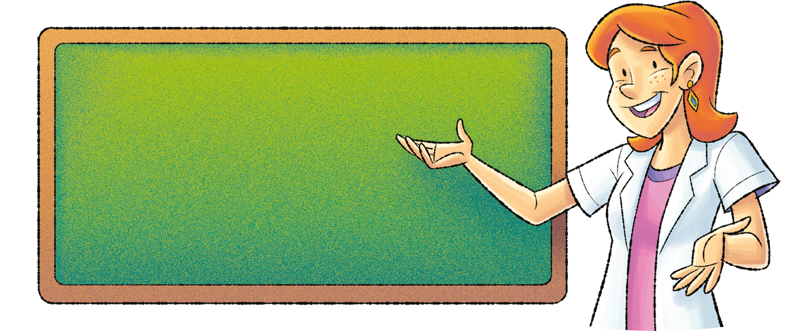
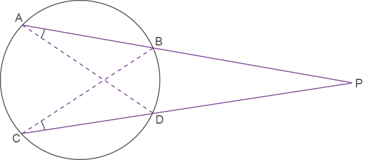
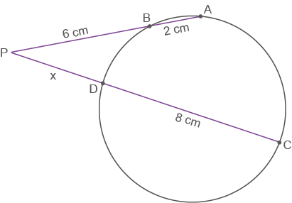

Capitulo 2
-Relações métricas nacircunferência
224
Vamos recordar as posições relativas de uma reta em relação a uma circunferência e seus elementos.

A seguir, vamos estudar as relações métricas em uma circunferência.
Relação entre cordas
Os segmentos AB e CD são cordas da circunferência, mas como não são diâmetros não podemos garantir que sejam congruentes. Porém há uma importante relação entre elas.
Considere os triângulos APD e CPB.

- (ângulos inscritos no mesmo arco ).
 ≡ (ângulos opostos
pelo vértice).
≡ (ângulos opostos
pelo vértice).
Logo, ∆CPB ~ ∆APD.
Portanto:

PA ∙ PB = PC ∙ PD
225
Acompanhe este exemplo:
Determine a medida do segmento CE

Os segmentos AC e BD são cordas da circunferência que se cruzam no ponto E. Logo, temos uma relação entre cordas.
Portanto:
AE ∙ EC = BE ∙ DE
Em que:
AE = 5 cm
EC = x
DE = 10 cm
BE = 6 cm
Então:
5 ∙ x = 6 ∙ 10
5x = 60
x = 12 cm
Logo, EC = 12 cm
Existem ainda outras relações envolvendo circunferências. Observe a seguir.
226
Relação entre secantes
Agora, considere os triângulos PAD e PCB.

Logo, ∆PAD ~ ∆PCB.
Portanto:
PA ∙ PB = PC ∙ PD
Acompanhe este exemplo:
- Determine a medida do segmento PD da figura.

Os segmentos PA e PC são secantes à circunferência e têm em comum o ponto P externo à circunferência. Logo, há uma relação entre secantes.
Portanto, temos que:
PA ∙ PB = PC ∙ PD
Em que:
PA = 6 + 2 = 8 cm
PB = 6 cm
PC = (x + 8) cm
PD = x cm
Então:
8 ∙ 6 = (x + 8) ∙ x
48 = x2 + 8x
x2 + 8x = 48
x2 + 8x - 48 = 0
∆ = b2 - 4ac = 82 - 4 ∙ 1 ∙ (-48)
∆ = 256
não convém
Logo, PD = 4 cm.
227
Relação entre secante e tangente
Considere os triângulos PAC e PCB.

(ângulo comum aos dois triângulos).
PAC ≡ BCP ( )
)
Logo, ∆PAC ~ ∆PCB.
Portanto:
PC2 = PA ∙ PB
Acompanhe este exemplo:
- Determine a medida da tangente PC da figura.

228
O segmento PA é secante à circunferência, e o segmento PC é tangente à mesma circunferência; ambos têm em comum o ponto P externo à circunferência. Logo, há uma relação entre secante e tangente.
Portanto, temos que:
PC2 = PA ∙ PB
Em que:
PC = x cm
PA = 12 + 4 = 16 cm
PB = 4 cm
Então:
x2 = 16 ∙ 4
x2 = 64
x = √64
x = 8 cm
Logo, PC = 8 cm.
Encontre soluções


229

a)

b)

c)

d)

e)

a)

b)

230
a)

b)

c)

d)

e)

f)